|
|
| green seaweeds text index | photo index |
| Seaweeds > Division Chlorophyta > Family Caulerpaceae > genus Caulerpa |
| Serrated
green seaweed Caulerpa serrulata* Family Caulerpaceae updated Oct 2016 Where seen? This coiled, serrated seaweed is sometimes seen on some of our shores, growing in small clumps on coral rubble. Features: 4-6cm long, but often tightly coiled and thus shorter. The central 'stem' is strap-like, flat but thick. The 'stem' has serrated edges of blunt spikes. In some, the 'stem' is tightly coiled. These spiky strap-like structures emerge along the length of a horizontal 'stem' that creeps over hard surfaces or just under the sand. Usually bluish- or greyish-green. Sometimes confused with similar green seaweeds. Here's more on how to tell apart some green seaweeds. Human uses: This seaweed is reported to be edible and used in medicines as an antibacterial and antifungal agent as well as to lower blood pressure. |
|
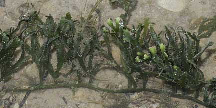 Labrador, May 09 |
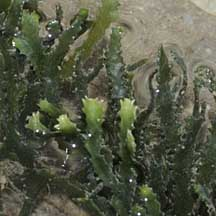 Labrador, May 09 |
|
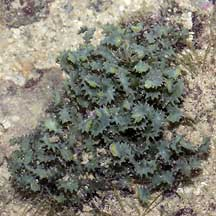 Sentosa, Jun 05 |
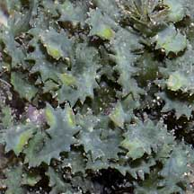 |
*Species are difficult to positively identify without close examination of internal parts. On this website, they are grouped by external features for convenience of display.
| Serrated green seaweeds on Singapore shores |
On wildsingapore
flickr
|
| Other sightings on Singapore shores |
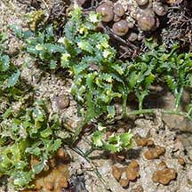 Pulau Hantu, Apr 21 Photo shared by Vincent Choo on facebook. |
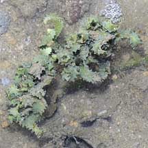 Terumbu Berkas, Jan 10 |
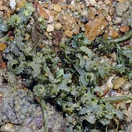 Pulau Biola, Dec 09 |
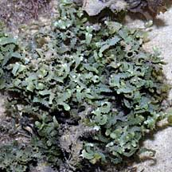 Pulau Salu, Aug 10 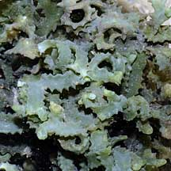 |
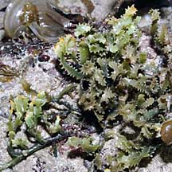 Pulau Senang, Aug 10 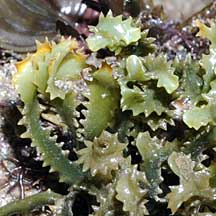 |
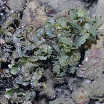 Pulau Senang, Jun 10 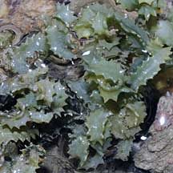 |
Links
References
|